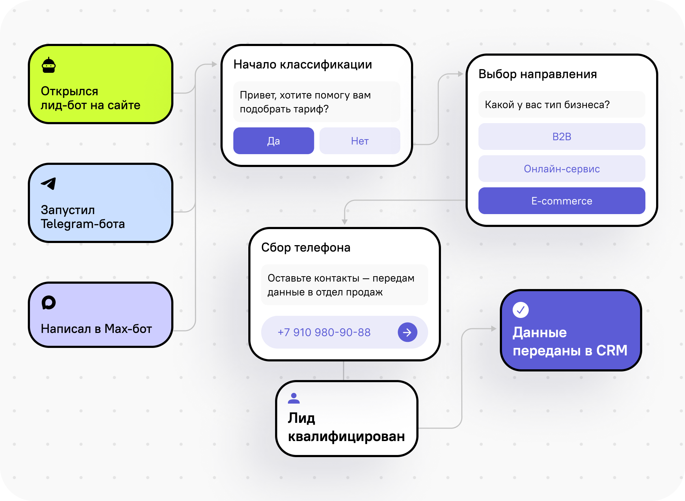
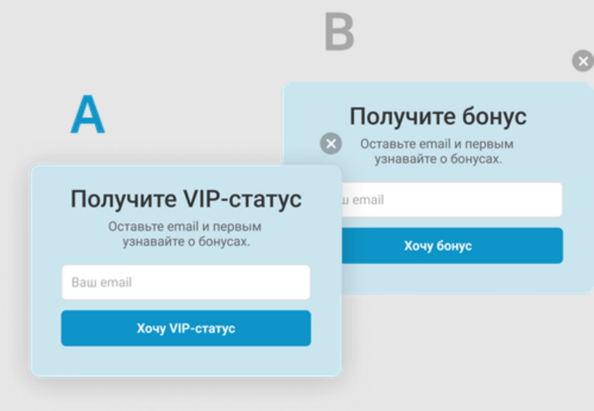
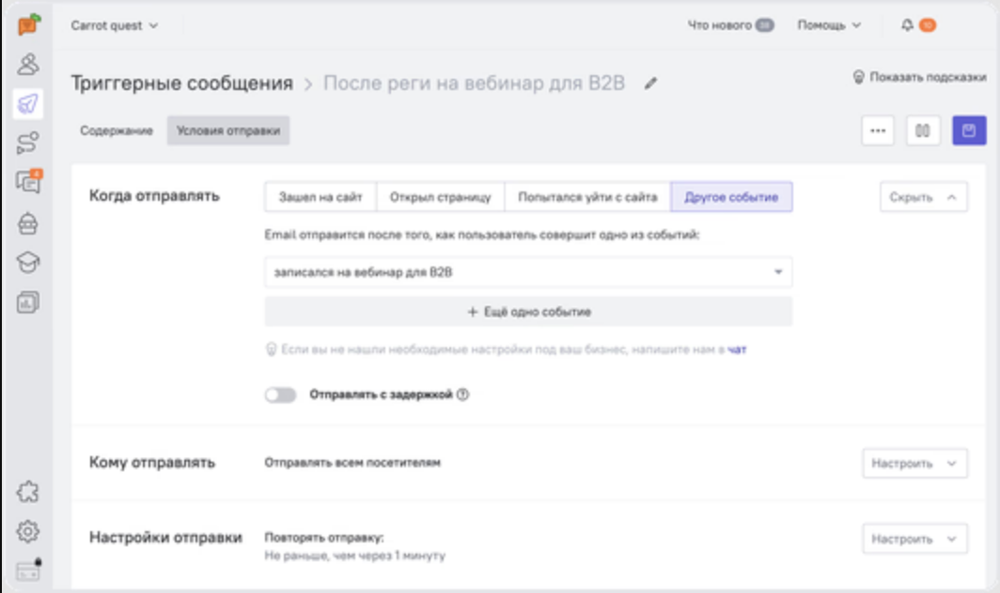
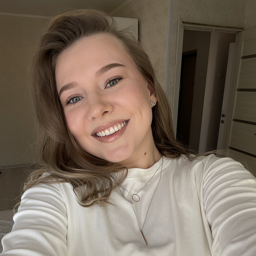

История Mosh — от скрипта в терминале до автономной команды агентов с двумя сигналами детекции попапов.
Контекст
Carrot Quest запускает на сайтах клиентов попапы, чат-ботов и нотификации. Все они срабатывают по триггерам — и иногда конфликтуют между собой.

Конструктор лид-бота в Carrot Quest
Проблема
Два окна одновременно на экране или попап, который выскакивает снова через секунды после закрытия. Пользователь не знает, куда кликать — и закрывает сайт.

Два попапа на одном экране — типичный баг наложения
Почему это дорого
Когда баг уже увидел живой пользователь. Раньше единственный способ поймать его — открыть сайт руками и ждать.
Первая гипотеза · V1
Python + Playwright. Даёшь текстовый сценарий — агент открывает сайт, ходит по страницам, каждые полсекунды смотрит DOM и ловит наложения. Отчёт — в чат.
Встреча с реальностью
Первый прогон на боевом сайте. Отчёт чистый. Но в карточке пользователя — два отправленных попапа. Агент честно смотрел не туда.
Что говорил агент
Что было на самом деле — карточка пользователя CQ
Разбор промаха
Агент искал только в главном фрейме. А попапы CQ живут внутри вложенных iframe — и селекторы из примеров не совпадали с реальной вёрсткой.
Учим агента видеть
Режим --debug выгрузил реальную структуру и дал верные селекторы. И мы поймали настоящее наложение.
Поворот архитектуры
Агент, которому каждый раз пишут сценарий руками, не масштабируется. Мы переосмыслили систему как команду агентов.
Сценарий пишется руками. Каждый прогон — ручной запуск и контроль.
Продакт проектирует сценарии и ревьюит отчёт, тестировщик прогоняет. Автономно.
Принцип — «мозги в агентах, руки в коде»: творческое за LLM, измерения за детерминированным Python.
Как работает команда
Дальше продакт и тестировщик общаются через файлы, без ручных подтверждений.
↩ Если в отчёте проблемы — продакт возвращает сценарии на доп. проверку
Сколько тестов
Баги рождаются на пересечении условий запуска. Поэтому 8 продуманных сценариев бьют 20 случайных. Набор адаптивен: база 6–8, +1 на шаг воронки.

Реальные триггеры отправки в Carrot Quest
Главное открытие
Кроме DOM, есть данные карточки CQ — когда и какой попап реально отправлен. Этот сигнал оказался надёжнее: ловит баг даже когда попап мелькнул быстрее, чем успел заметить экран.
Данные из карточки пользователя CQ
К чему пришли
Человек задаёт сайт и воронку — дальше агенты работают сами.
DOM + данные CQ API. Вместе они не дают багу проскользнуть.
Покрывают оси триггеров под воронку клиента, а не набивают число.
Тайминги, попапы и ссылки на карточки. Четыре типа багов.
От «обойди сайт и посмотри» — к команде, которая находит проблему раньше клиента.
Команда

CQ Popup QA Agent · Хакатон Carrot Quest · 2026
Открыть на GitHub →Построен с Claude Code · Playwright · Python